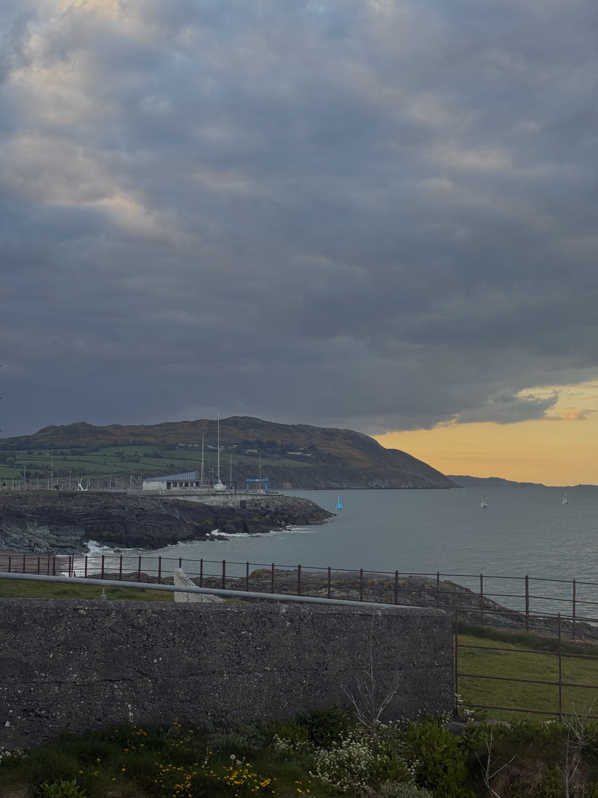
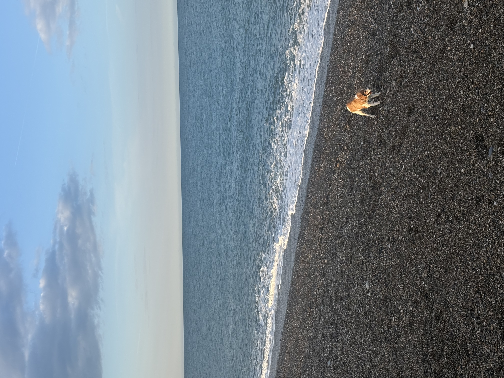
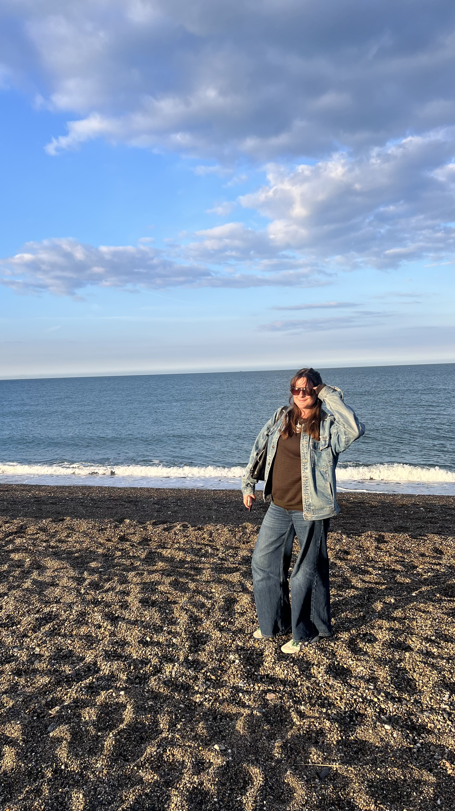

Overview
- Duration: 4 hours
- Travel Logistics: About an hour DART train south of Dublin
- Dublin Tara St. station → Greystone Station
My Experience
We left from Tara St. Station in Dublin around 5:00 PM and took the DART train (which is on the LEAP card system). The train ride is about an hour, but it is very lovely along the coast. When we arrived, we got dinner at The Burnaby and then walked along the beach for about an hour. Overall, we spent about two hours in Greystones, then took the train back to Dublin.
1 / 4

View in Greystones
2 / 4

A house in Greystones
3 / 4

Beach in Greystones
4 / 4

Me on the beach